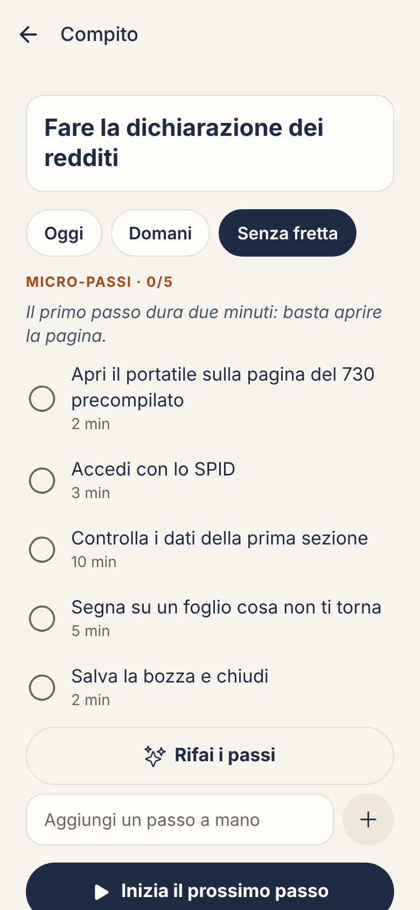
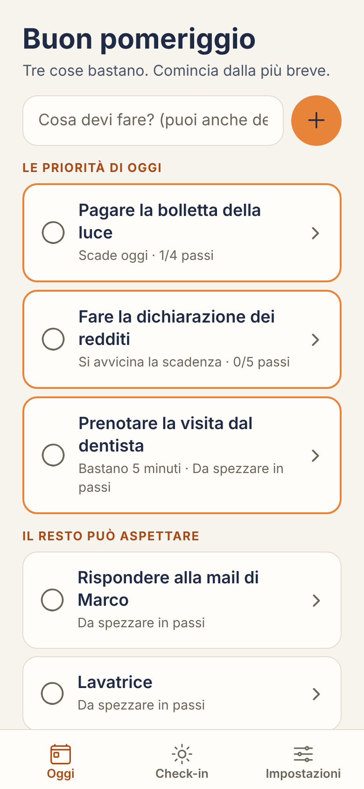
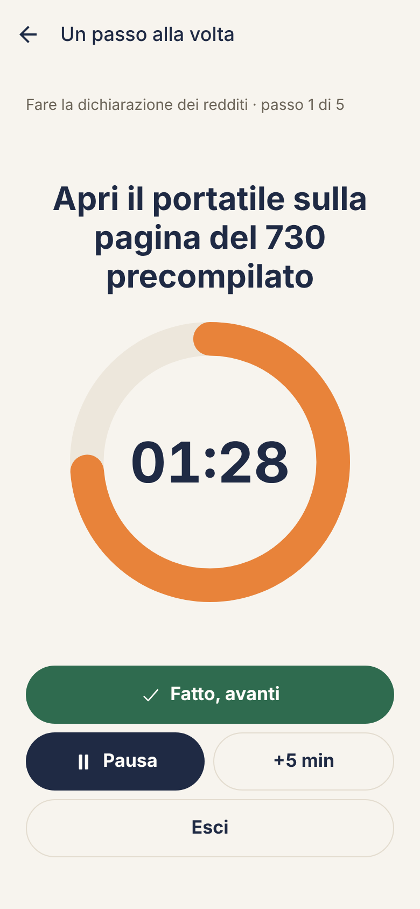
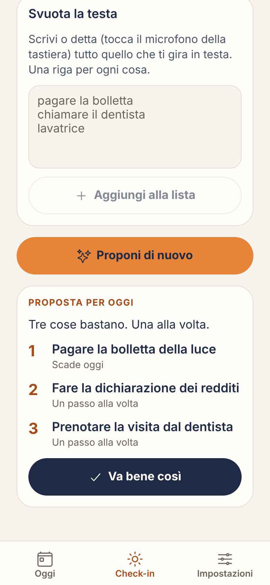

La lista diventa un muro
Dieci cose tutte insieme non aiutano a iniziare: bloccano. E ogni giorno il muro si alza.
Passo spezza i compiti in micro-passi da pochi minuti, ti ricorda le cose con insistenza finché non rispondi e ti fa vedere il tempo che passa. Senza liste che fanno paura, senza sensi di colpa.

Con l’ADHD il problema raramente è sapere cosa fare. È iniziare, ricordarsene e sentire il tempo che passa.
Dieci cose tutte insieme non aiutano a iniziare: bloccano. E ogni giorno il muro si alza.
La scorri via in un secondo, con la migliore intenzione di farlo “dopo”. E il dopo non arriva.
“Cinque minuti” diventano un’ora, oppure un’attività da un’ora sembra infinita prima ancora di iniziarla.
Scrivi o detta quello che devi fare. L’assistente lo divide in micro-passi concreti, ognuno con la sua durata. Il primo è sempre ridicolmente facile: serve solo a partire.

In modalità focus vedi un solo passo alla volta e un disco che si svuota. Niente altro sullo schermo. Hai bisogno di più tempo? Cinque minuti in più, senza drammi.

Svuota la testa scrivendo tutto quello che ti gira in mente: Passo ti propone le 3 priorità del giorno, con il motivo. La sera, uno sguardo a cosa hai portato a termine. Il resto aspetta domani.

Promemoria insistentiTi richiama ogni pochi minuti finché non rispondi: Fatto, Rimanda o Non oggi.
Zero sensi di colpaNessuna serie che si azzera, nessun numero rosso. Se salti un giorno, si riparte da adesso.
I tuoi dati restano tuoiNiente account. I compiti stanno sul tuo telefono, non sui nostri server.
Pensata in italianoNon una traduzione: tono, esempi e scadenze sono quelli della vita qui.
Passo nasce da due competenze: Francesca Estatico, specialista in ADHD, cura il metodo e il tono; Sasha Estatico, ingegnere del software, costruisce l’app. Ogni scelta parte da come funzionano attenzione e motivazione quando c’è l’ADHD.
Per questo il primo passo è sempre minuscolo. Una volta partiti, continuare è più facile.
Un promemoria che si ignora non serve. Passo insiste, con gentilezza, finché non decidi tu.
Stime in minuti per ogni passo e un timer che si vede: il tempo diventa qualcosa che puoi guardare.
Niente punizioni né classifiche. Solo il prossimo passo, e un “fatto” quando ce la fai.
0 €
In arrivo
No. Passo è uno strumento di organizzazione: non fa diagnosi, non tratta l’ADHD e non sostituisce il parere di un professionista sanitario. Può affiancare il percorso che stai già facendo.
No. Passo è pensata per l’ADHD, ma funziona per chiunque fatichi a iniziare le cose o a gestire il tempo.
I tuoi compiti restano sul tuo telefono: non c’è un account e non li salviamo sui nostri server. Se usi l’assistente AI, il testo del compito viene inviato al fornitore del modello solo per generare i passi e non viene conservato da noi. Puoi spegnere l’AI quando vuoi. Trovi tutto nell’informativa privacy.
Passo arriva prima su Android, attraverso il Google Play Store. La versione per iPhone verrà dopo. Iscriviti alla lista d’attesa per saperlo per primo.
Sì: in ogni campo puoi usare il microfono della tastiera del telefono per dettare compiti e pensieri.
Ti scriviamo solo quando Passo è pronta, e per il prezzo di lancio.